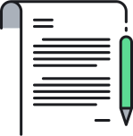
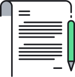

Get in touch to arrange a chat about how we can work with you. We'd love to hear from you!

Information security is quickly becoming one of the most critical challenges for businesses in the 21st century.
The proliferation of internet-based communications and mobile technology has revolutionised the flow of
information globally.
We perform in-depth audits of existing policies and procedures and assess these against relevant industry
standards as described by ISO 27001 and related standards.
With over 10 years’ experience in the IT consultancy sector, our objective is to help organisations mitigate
the information security risks to their operations while maximising the use of technology.
We conduct a detailed review of existing information security policies and procedures for your organisation.
These are assessed against relevant industry best practise as described by ISO 27001 and related standards.
We work with you and your internal IT team to review existing systems, policies and procedures against
international standards in the following areas:
| IT security policies and implementation |
| Roles and responsibilities for IT security |
| Human resource security |
| Asset management |
| Access control measures |
| Physical and environmental security |
| Network and communications security |
| Incident response and business continuity procedures |
| Legal and statutory compliance |
We conduct a thorough review in each of these areas, with the objective of assessing and providing guidance
on:
| Improving your resilience to everyday risks including system failures and cyber attacks; |
| Ensuring that adequate incident response strategies are in place in the event of system failures or security breaches; |
| Ensuring that your employees have adequate understanding of the information security needs of the company, and their roles and responsibilities in this regard. |
Get in touch to arrange a chat about how we can work with you. We'd love to hear from you!
